Mr. Robot
Resolución completa del laboratorio Mr. Robot, desde la configuración del entorno hasta la obtención de privilegios de administrador.
| Ficha Técnica | Detalles |
|---|---|
| Dificultad | Fácil / Media |
| SO Objetivo | Linux (Ubuntu) |
| Servicios Explotados | HTTP/HTTPS (WordPress) |
| Técnicas Clave | Enumeración Web, Inyección de Reverse Shell, Cracking MD5, SUID Escalation (Nmap). |
En este laboratorio se sigue una cadena de ataque bastante completa, empezando por el reconocimiento de la máquina y terminando con el acceso total al sistema. A lo largo del proceso se verá cómo descubrir servicios web, encontrar pistas ocultas, obtener credenciales y aprovechar un panel de WordPress para conseguir ejecución de código. Después, una vez dentro de la máquina, se continúa con la enumeración de usuarios, archivos y contraseñas hasta llegar a la escalada final de privilegios. Es una práctica muy útil para entender cómo se conectan varias fases típicas de un entorno real de hacking.
Configuración de red interna en VirtualBox
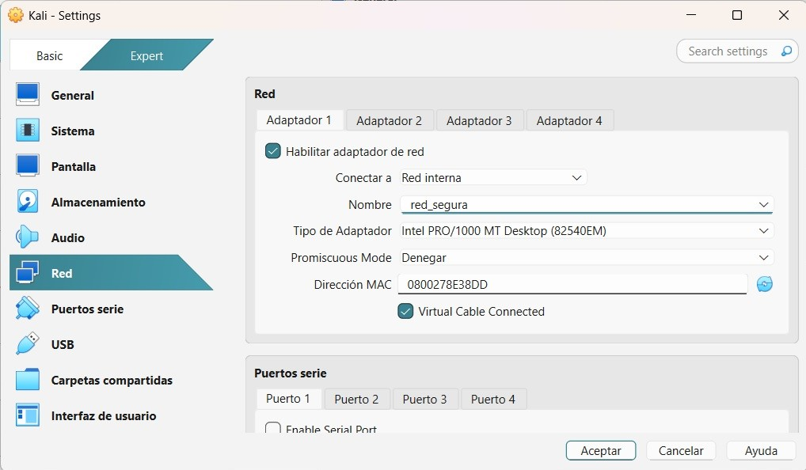
Para empezar, se configura la red de la máquina Kali en VirtualBox usando el modo Red interna. Esto permite que Kali y la máquina vulnerable se comuniquen entre sí dentro de una red aislada. El nombre de la red interna (red_segura) debe coincidir en ambas máquinas para que queden dentro del mismo segmento.
Error al instalar dirsearch por falta de red
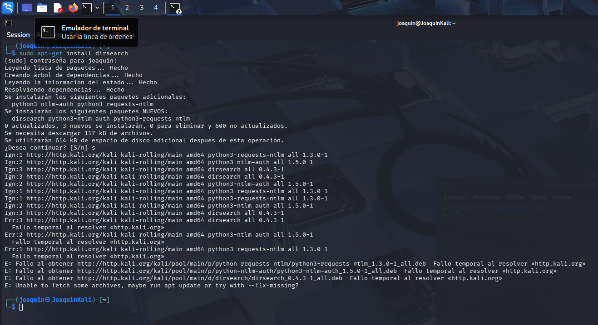
En esta terminal se intenta instalar dirsearch con el comando sudo apt-get install dirsearch. sudo ejecuta el comando con privilegios de administrador, y apt-get install instala paquetes desde los repositorios. La instalación falla porque Kali no puede resolver el dominio http.kali.org, es decir, hay un problema de red o DNS. Este error suele aparecer cuando la máquina no tiene salida a internet al estar dentro de la red interna. Para instalarlo, hay que apagar la máquina, conectarla con Adaptador puente e instalarlo.
dirsearch es una herramienta de fuerza bruta de contenidos web que se usa para descubrir directorios, archivos, paneles y rutas ocultas en un servidor. Funciona probando automáticamente muchas rutas de una lista predefinida y analizando las respuestas HTTP, por ejemplo códigos 200, 301, 403 o 404. En este laboratorio sirve para localizar recursos interesantes como paneles de administración, ficheros sensibles o rutas no visibles desde la página principal, que pueden dar pistas o abrir nuevas vías de explotación.
Descubrimiento de hosts y escaneo con Nmap
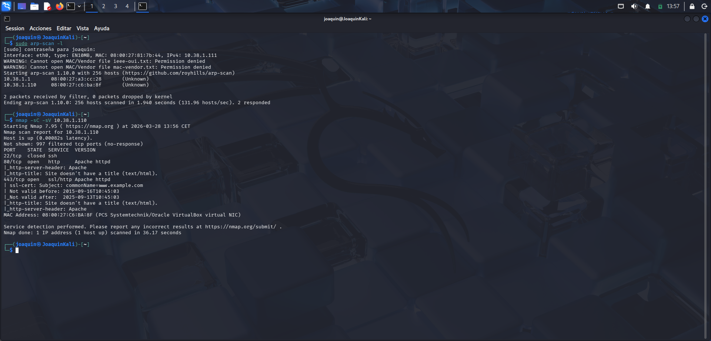
Se hace primero un descubrimiento de hosts con sudo arp-scan -l, que sirve para localizar dispositivos activos en la red local mediante peticiones ARP. Gracias a ello se identifican las direcciones 10.38.1.1 y 10.38.1.110, confirmando cuál es la máquina objetivo dentro del laboratorio. Después se ejecuta nmap -sC -sV 10.38.1.110, donde -sC lanza scripts básicos de reconocimiento y -sV intenta detectar versiones de los servicios. El resultado muestra los puertos 80 y 443 abiertos con Apache, mientras que el 22 aparece cerrado. Esta información deja claro que la superficie de ataque principal está en los servicios web HTTP y HTTPS.
Primera visita web al objetivo
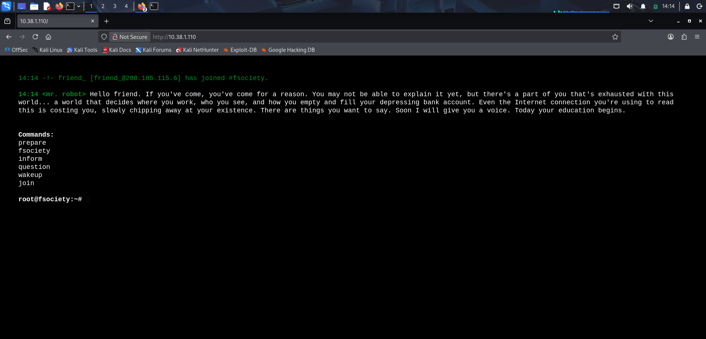
Una vez descubierta la IP y comprobado que tiene abiertos los servicios HTTP y HTTPS, se visita desde el navegador la dirección 10.38.1.110, descubriendo la página principal de la máquina objetivo. La web muestra una interfaz inspirada en terminal con temática de Mr. Robot, lo que confirma que el servicio HTTP está activo. Esta comprobación inicial sirve para validar que la máquina responde por web y que la IP detectada es correcta. También permite empezar la fase de reconocimiento visual del objetivo. A partir de aquí, lo normal es combinar navegación manual con enumeración de directorios y recursos ocultos.
Enumeración de directorios con dirsearch
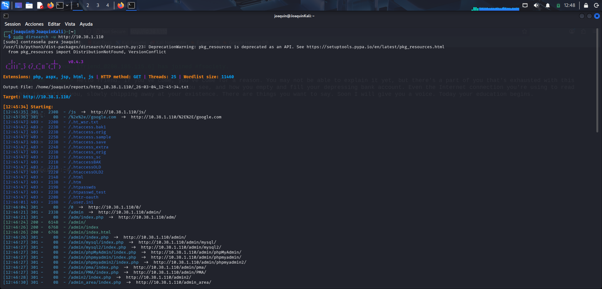
En este punto se lanza un descubrimiento de directorios con sudo dirsearch -u http://10.38.1.110. La opción -u especifica la URL objetivo sobre la que se va a trabajar. En la salida aparecen rutas interesantes como /admin, además de múltiples respuestas HTTP como 200, 301 y 403. Esta fase resulta clave para localizar paneles de acceso, recursos sensibles o puntos de entrada útiles para la explotación.
Filtrado de respuestas HTTP 200
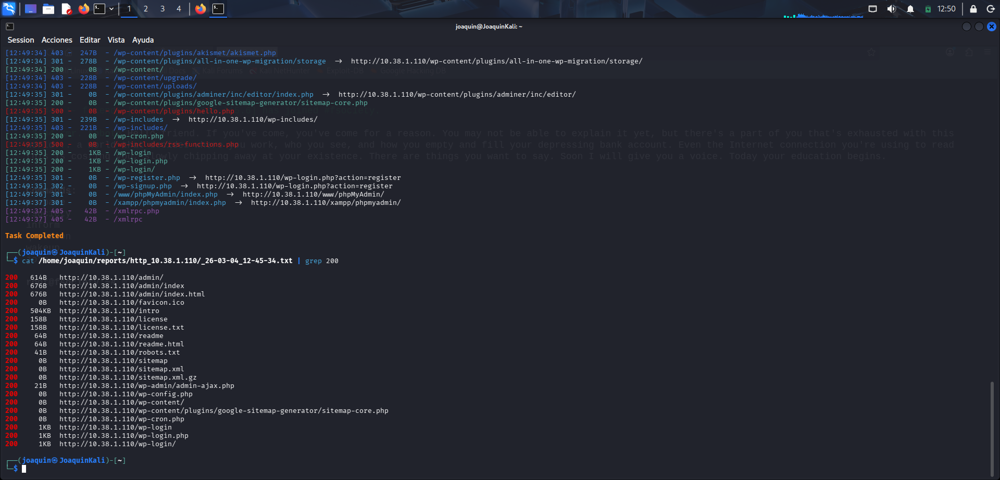
A continuación se filtran los resultados guardados por dirsearch con el comando cat /home/joaquin/reports/http_10.38.1.110/_26-03-04_12-45-34.txt | grep 200. cat muestra el contenido completo del archivo de resultados y grep 200 extrae únicamente las líneas cuyo código HTTP es 200, es decir, recursos accesibles correctamente. Este filtrado permite centrarse solo en las rutas realmente existentes y evita perder tiempo con redirecciones o errores. Gracias a ello destacan elementos interesantes como /license, /robots.txt, /readme.html y varias rutas de WordPress. Es una forma rápida de priorizar la enumeración.
Pista encontrada en la ruta /license
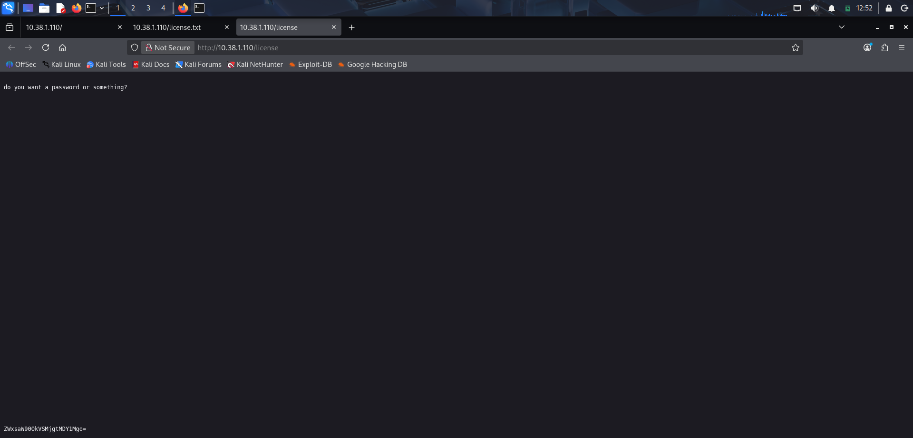
En esta imagen se navega manualmente a la ruta /license, una de las páginas encontradas durante la enumeración. La página contiene el mensaje do you want a password or something? junto a una cadena codificada en la parte inferior, lo que apunta a una pista dejada intencionadamente por la máquina. Este paso demuestra la importancia de revisar visualmente los recursos encontrados y no quedarse solo con los nombres de archivo. El contenido sugiere que la cadena puede esconder una contraseña o una credencial útil. Desde aquí, el siguiente paso lógico es intentar decodificarla.
Decodificación de credenciales en Base64
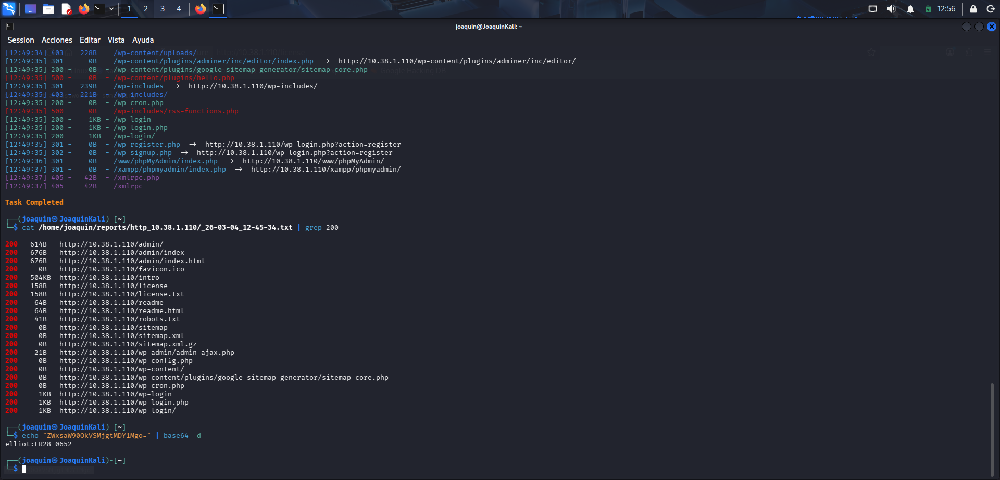
Se usa el comando echo 'ZWxsaW90QW5JdTMDY1Mgo=' | base64 -d para decodificar la cadena encontrada anteriormente. echo imprime el texto introducido y base64 -d lo transforma desde formato Base64 a texto legible. El resultado obtenido es elliot:ER28-0652, que revela unas credenciales potencialmente válidas para acceder a la aplicación. Este paso convierte una pista aparentemente opaca en información directamente utilizable. La decodificación es una técnica básica, pero muy habitual en retos y laboratorios.
Acceso al panel de WordPress
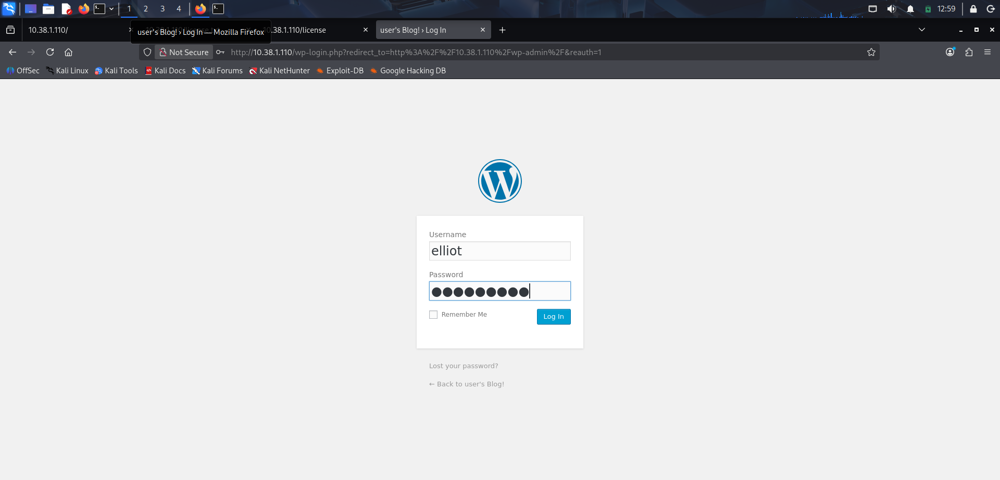
Se introducen las credenciales descubiertas en el formulario de WordPress alojado en /wp-login.php. El usuario utilizado es elliot y la contraseña corresponde al valor recuperado tras decodificar la cadena Base64. Este inicio de sesión confirma que la enumeración y el análisis de pistas han permitido obtener acceso legítimo al panel de administración. A partir de aquí, el laboratorio entra en una fase más avanzada, ya que disponer de acceso a WordPress puede abrir la puerta a ejecución de código o escalada. Es un punto de inflexión bastante claro dentro del ataque.
Generación de la reverse shell en PHP
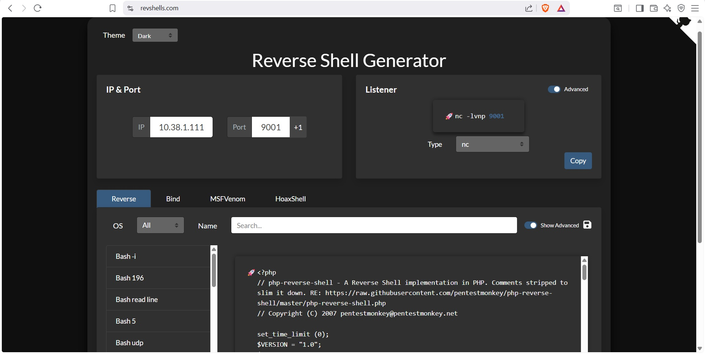
Tras conseguir acceso al panel de WordPress, el siguiente paso es generar una reverse shell para inyectarla dentro de la página. Por eso, en esta captura se accede a la web revshells.com para generar una reverse shell en PHP adaptada a la IP y al puerto del atacante. Una reverse shell es un fragmento de código que, al ejecutarse en la máquina víctima, inicia una conexión hacia el equipo atacante y le entrega una consola remota. Aquí se configura la IP 10.38.1.111 y el puerto 9001, que son los datos a los que la máquina vulnerable intentará conectarse. Esta página facilita la creación del payload ya preparado, evitando escribirlo manualmente. Es un paso previo a incrustar ese código en un archivo ejecutable de WordPress.
Inserción del payload en 404.php
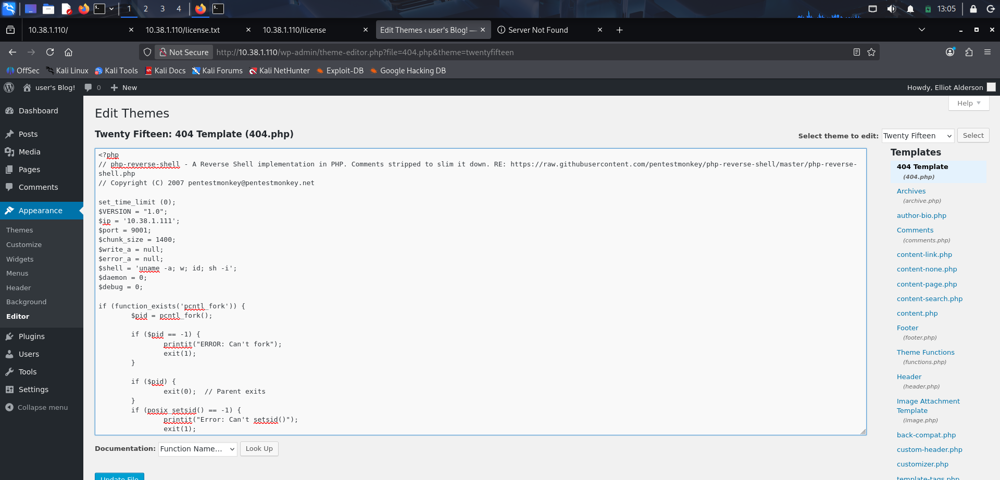
Dentro del panel de administración de WordPress, se abre el archivo 404.php del tema activo desde el editor de apariencia. El archivo de error 404 resulta interesante porque se ejecuta cuando se solicita una ruta inexistente, así que puede aprovecharse para disparar el payload. En este caso se pega el código de la reverse shell generado anteriormente para que WordPress lo ejecute al provocar un error 404. Esta técnica saca partido al acceso administrativo conseguido previamente para insertar código PHP en un archivo del tema. Es una manera de conseguir ejecución remota de código desde la propia aplicación web.
Confirmación de edición del archivo
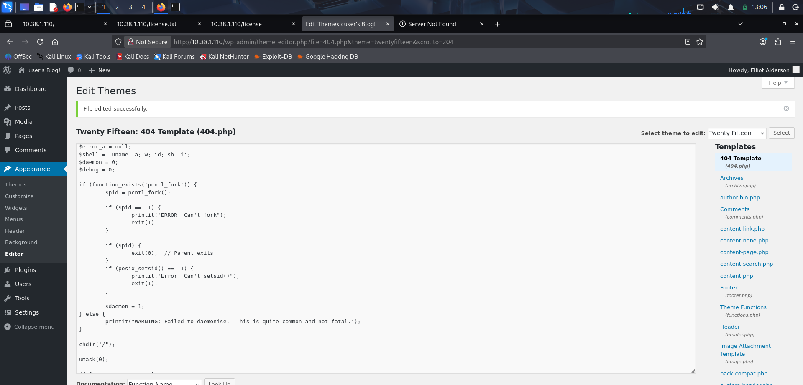
Ahora aparece el mensaje File edited successfully, lo que confirma que WordPress ha guardado correctamente el contenido modificado del archivo 404.php. Esto significa que el payload PHP ya ha quedado escrito en el servidor y está listo para ejecutarse cuando se invoque esa plantilla. No implica todavía que exista una conexión, pero sí que la aplicación ha sido alterada con éxito desde el panel de administración. A partir de aquí solo falta preparar el listener y forzar la ejecución del archivo modificado. Es la confirmación de que la inyección de código ha funcionado.
Listener Netcat a la espera de conexión
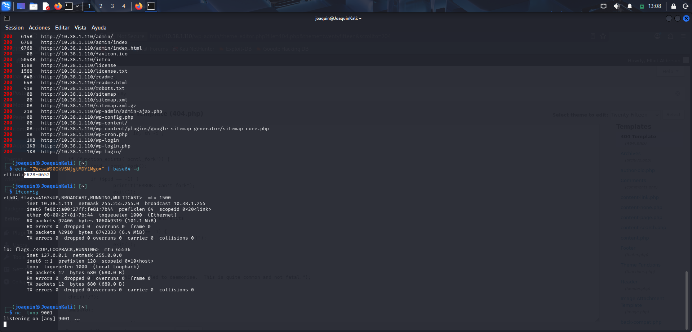
Se prepara un listener con nc -lvnp 9001. Netcat, o nc, se usa aquí para escuchar conexiones entrantes; -l indica modo escucha, -v activa la salida detallada, -n evita resolución DNS y -p 9001 fija el puerto. Este listener es imprescindible porque será el punto al que la víctima se conectará cuando ejecute el payload. Sin esta escucha activa, la reverse shell no podría completarse.
Ejecución forzada de la plantilla 404
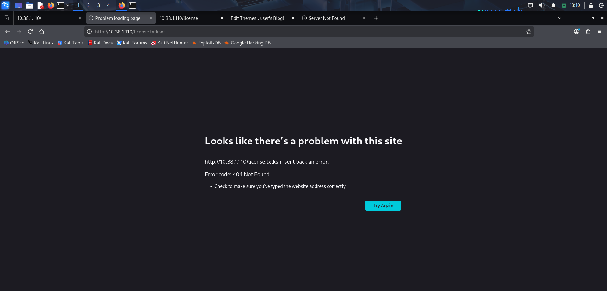
Se fuerza la ejecución del archivo 404.php visitando una dirección inexistente dentro del sitio, en este caso una ruta inventada. Al no encontrar esa página, WordPress carga la plantilla de error 404 que previamente había sido modificada con la reverse shell. Aunque el navegador muestra un error 404 Not Found, internamente el servidor ha procesado el archivo PHP y ha intentado lanzar la conexión hacia el listener. Este paso sirve precisamente para activar el payload sin necesidad de acceder a una ruta real del sitio. El error visible en pantalla forma parte del comportamiento esperado para disparar la plantilla alterada.
Shell remota recibida en el atacante
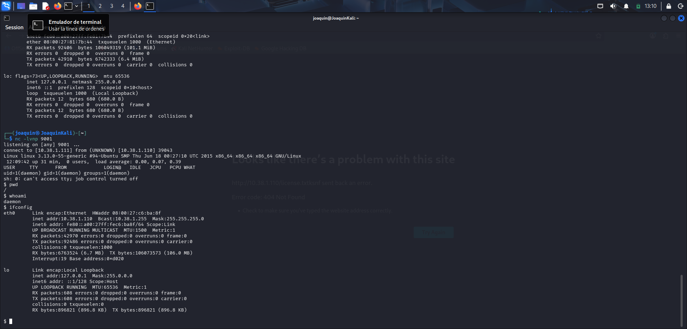
Se observa que la reverse shell ha funcionado porque nc -lvnp 9001 recibe una conexión desde la IP de la máquina víctima. Una vez dentro se ejecutan comandos básicos como pwd, whoami e ifconfig para orientarse dentro del sistema comprometido. pwd muestra el directorio actual, whoami indica el usuario con el que se ha obtenido acceso e ifconfig enseña la configuración de red de la máquina remota. La salida confirma que la shell se ha abierto con el usuario daemon, que tiene privilegios limitados. Este reconocimiento inicial sirve para saber desde dónde continuar la postexplotación.
Información sensible en robots.txt
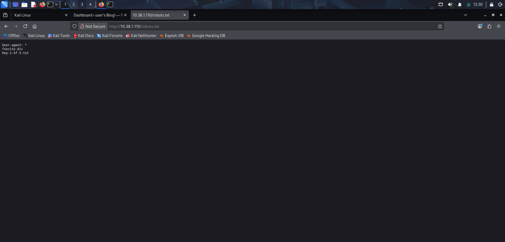
En esta parte se visita el archivo robots.txt, que es un fichero usado por los sitios web para indicar a los rastreadores qué rutas existen o cuáles no deberían indexarse. En este caso, el contenido revela dos recursos bastante interesantes, fsocity.dic y key-1-of-3.txt, que no eran visibles desde la página principal. Este tipo de archivo suele revisarse durante la enumeración porque a veces expone rutas sensibles o pistas del reto. La presencia de esos nombres confirma que el servidor contiene tanto una clave como un diccionario útil para ataques posteriores. Es una fuente de información muy valiosa en la fase de reconocimiento.
Descarga de la primera clave
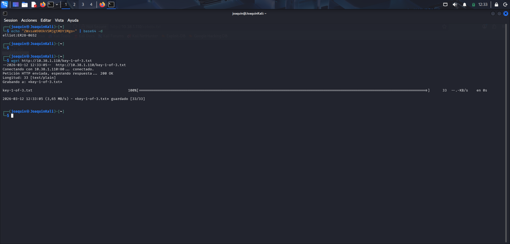
En esta terminal se descarga la primera clave con wget http://10.38.1.110/key-1-of-3.txt. El comando wget se usa para descargar archivos directamente desde una URL y guardarlos en la máquina local. Después, al mostrar el contenido del fichero, se obtiene la primera key del laboratorio, lo que confirma que la ruta encontrada en robots.txt era válida. Este paso materializa uno de los objetivos principales del reto. Además, demuestra cómo una simple enumeración web puede llevar a información crítica.
Descarga del diccionario fsocity.dic
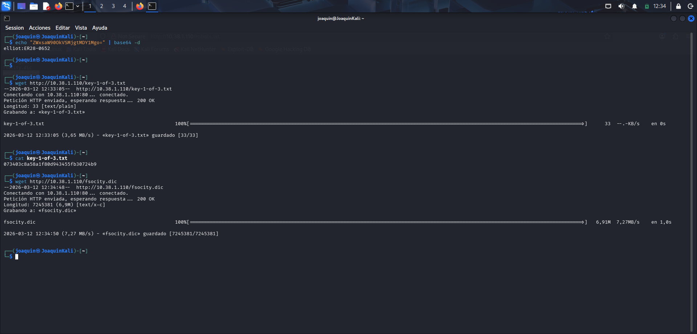
Aquí también se utiliza wget, esta vez con wget http://10.38.1.110/fsocity.dic, para descargar el diccionario expuesto por el servidor. Ese archivo contiene una gran cantidad de palabras y puede emplearse más adelante en ataques de fuerza bruta o cracking de contraseñas. En laboratorios como este, disponer de un diccionario personalizado del propio objetivo suele ser especialmente útil porque refleja términos relevantes del entorno. La descarga se completa correctamente y deja preparado un recurso importante para las siguientes fases. Es una pieza clave para avanzar hacia nuevas credenciales.
Enumeración interna y hallazgo del hash
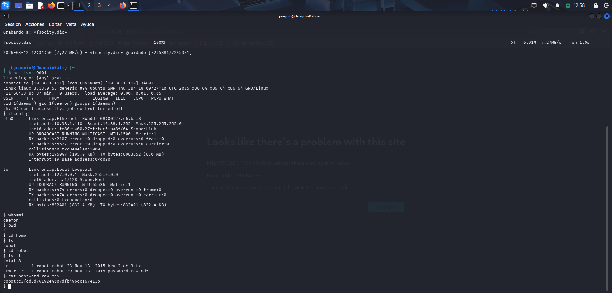
Se vuelve a recibir acceso a la máquina mediante nc -lvnp 9001 y, una vez dentro, se recorre el sistema con comandos como whoami, pwd, cd, ls, ls -l y cat. cd permite cambiar de directorio, ls lista archivos, ls -l los muestra con detalles de permisos y propietarios, y cat imprime el contenido de un fichero. Gracias a esa enumeración se llega al directorio del usuario robot, donde aparecen key-2-of-3.txt y password.raw-md5. Aunque la segunda clave todavía no puede leerse por permisos, sí se obtiene un hash MD5 desde password.raw-md5, que será útil para intentar escalar privilegios.
Resolución del hash MD5
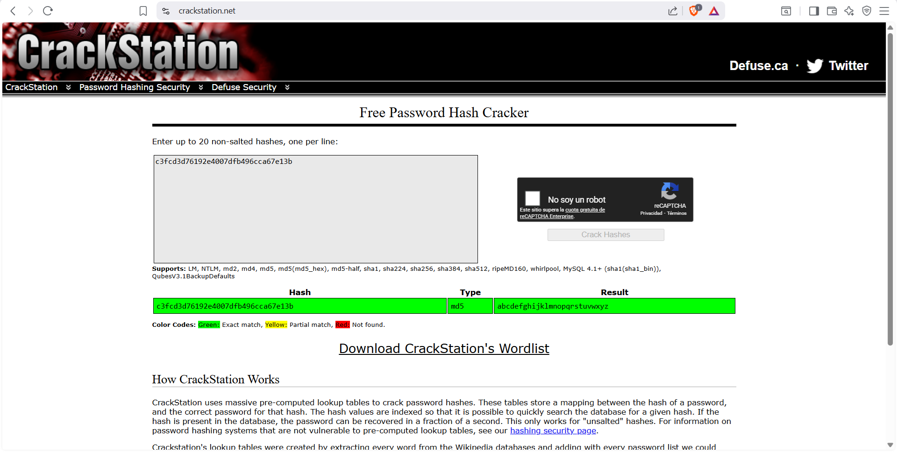
Se pega el hash MD5 obtenido antes en CrackStation para intentar recuperar la contraseña en texto claro. Este tipo de páginas compara el hash introducido con enormes bases de datos de hashes ya resueltos y, si encuentra coincidencia, devuelve la contraseña original. En este caso, el resultado revela la clave abcdefghijklmnopqrstuvwxyz, que después se usará para cambiar del usuario daemon al usuario robot. Este paso permite convertir un hash aparentemente inútil en una credencial válida. Es una técnica muy habitual cuando se encuentra un hash sin salt.
Cambio al usuario robot y segunda clave
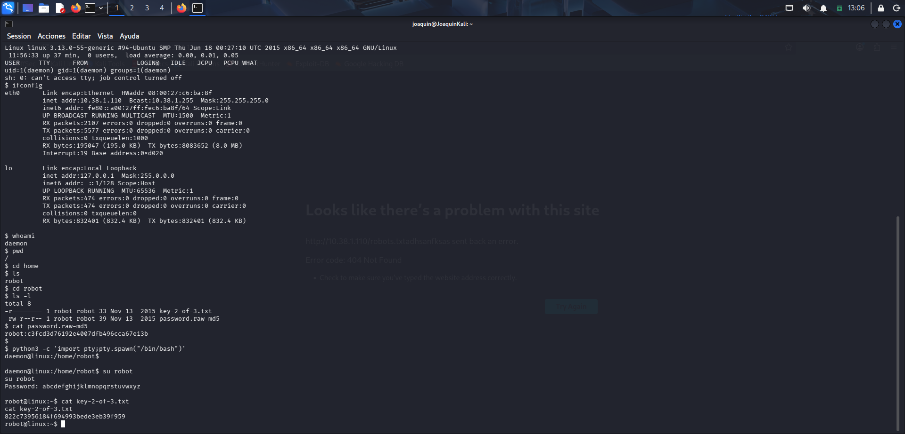
En esta fase se mejora la shell con python3 -c 'import pty;pty.spawn("/bin/bash")', que sirve para obtener una terminal más estable e interactiva. Después se usa su robot para cambiar al usuario robot introduciendo la contraseña descubierta anteriormente. Finalmente, con cat key-2-of-3.txt, se muestra el contenido de la segunda clave, que antes no podía leerse por falta de permisos. El comando cat imprime en pantalla el contenido de un fichero de texto. Este cambio de usuario marca un avance importante en la escalada de privilegios.
Búsqueda de binarios con permisos especiales
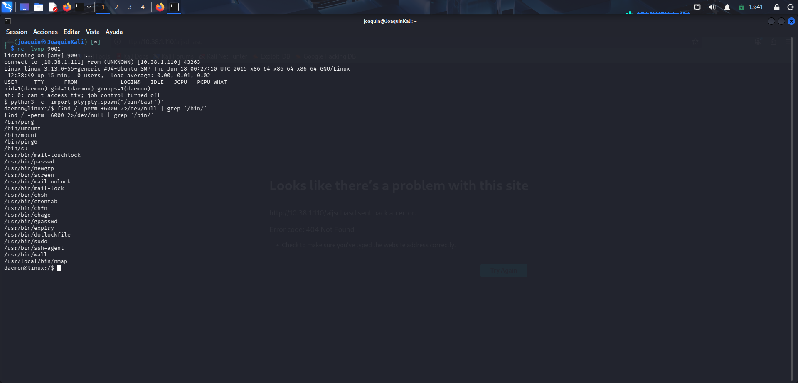
Ahora se realiza una búsqueda por todo el sistema para localizar programas que tengan permisos especiales. Para ello se usa el comando find / -perm +6000 2>/dev/null | grep '/bin/', que sirve para encontrar archivos que podrían ejecutarse con más privilegios de los normales. Entre los resultados aparece nmap, un programa que en esta máquina puede aprovecharse para subir de nivel dentro del sistema. Este paso es importante porque permite detectar una posible puerta hacia el usuario administrador. En otras palabras, aquí se está buscando una debilidad interna para poder avanzar.
Escalada final a root
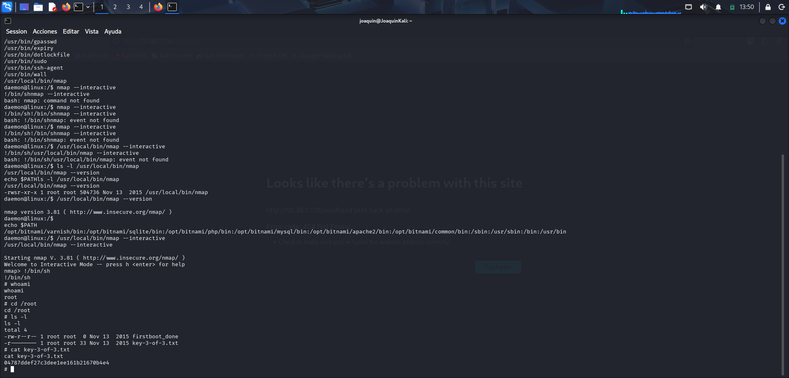
En esta última fase, tras consultar GTFOBins, se comprueba que el programa nmap puede aprovecharse para conseguir más permisos en el sistema. Después se ejecuta /usr/local/bin/nmap --interactive para abrir su modo interactivo y, a continuación, !/bin/sh para lanzar una consola con privilegios de administrador. Esto se verifica con whoami, que devuelve root. Finalmente, con cd /root y cat key-3-of-3.txt, se accede a la carpeta del administrador y se lee la tercera clave. Con este paso se completa el laboratorio al obtener el control total de la máquina.
Conclusión
Este laboratorio resulta muy completo y entretenido, porque combina varias fases típicas de un entorno de hacking real en una máquina con temática de "Mr. Robot". A lo largo del proceso se trabaja sobre todo con los servicios web "HTTP" y "HTTPS", haciendo reconocimiento con "nmap", enumeración de rutas con "dirsearch" y revisión manual de recursos como "robots.txt". También se ve cómo aprovechar un acceso a "WordPress" para conseguir ejecución remota de código mediante una reverse shell, cómo moverse dentro del sistema con una shell limitada, identificar información útil como hashes y diccionarios, y realizar una escalada de privilegios hasta "root" apoyándose en "GTFOBins". En general, es un laboratorio muy útil para reforzar conceptos de enumeración, explotación web, postexplotación y escalada, y además deja la sensación de estar siguiendo una cadena de ataque completa de principio a fin.
Deathnote
Resolución completa del laboratorio Deathnote, desde la enumeración inicial hasta la escalada final a root.
| Ficha Técnica | Detalles |
|---|---|
| Dificultad | Principiante / Media |
| SO Objetivo | Linux |
| Servicios Explotados | HTTP (WordPress), SSH |
| Técnicas Clave | Virtual Hosting (/etc/hosts), Esteganografía básica, Movimiento Lateral (SSH Keys), Decodificación (Brainfuck/Base64). |
En este laboratorio se ve muy bien cómo una máquina puede ir dejando pistas poco a poco, y cómo una buena enumeración permite convertirlas en acceso real. Primero se revisarán la web y los archivos expuestos, localizando recursos interesantes y relacionando la información que vaya apareciendo. Más adelante se utilizarán esas pistas para obtener credenciales válidas, entrar por SSH y seguir investigando dentro del sistema. Es una máquina muy educativa porque enseña que muchas veces avanzar no depende de atacar más fuerte, sino de fijarse mejor en los detalles.
Descubrimiento inicial del objetivo
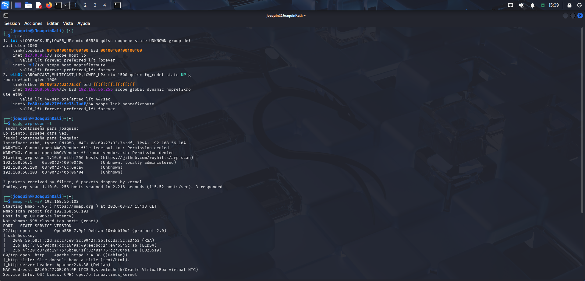
Primero se comprueba la IP de la máquina atacante con ip a, que muestra que Kali tiene la dirección 192.168.56.104 dentro de la red del laboratorio. Después se usa sudo arp-scan -l para descubrir qué otros equipos están activos en ese segmento, y ahí ya aparecen varias IP candidatas. Por último, con nmap -sC -sV 192.168.56.103 se analiza el host más interesante y se identifican dos servicios abiertos: SSH en el puerto 22 y HTTP en el puerto 80. Ese paso confirma que la máquina objetivo está accesible y que ya hay una base clara para seguir con la enumeración.
Asociación manual del dominio local
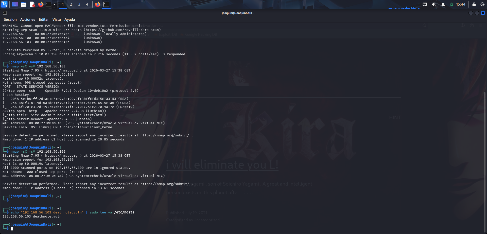
En un primer momento se probó a visitar la web con la IP de la víctima. Sin embargo, daba error. Por ello, se añadió una entrada al archivo hosts con echo … | sudo tee -a /etc/hosts para asociar la IP 192.168.56.103 al nombre deathnote.vuln. Esto evita depender del DNS y permite navegar y enumerar el sitio web usando su nombre esperado, algo muy útil cuando la aplicación utiliza virtual hosts.
Acceso correcto a la instancia de WordPress
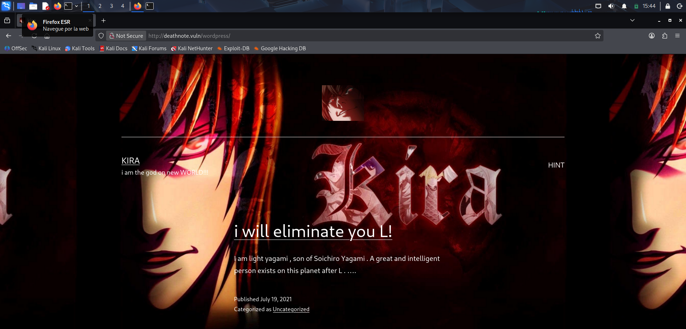
En esta imagen ya se ve la página principal de WordPress cargando correctamente en el navegador usando la URL http://deathnote.vuln/wordpress/. Esto confirma que la modificación del archivo hosts ha funcionado y que el servicio web responde como se esperaba. A nivel de reconocimiento visual, la web muestra un único post llamado KIRA y un diseño bastante simple, lo que hace pensar que las pistas no van a estar en funcionalidades complejas sino en el contenido, el código fuente o rutas ocultas. Es un buen momento para empezar a revisar comentarios HTML, enlaces internos y recursos cargados por la página.
Pista visible en el contenido de la web
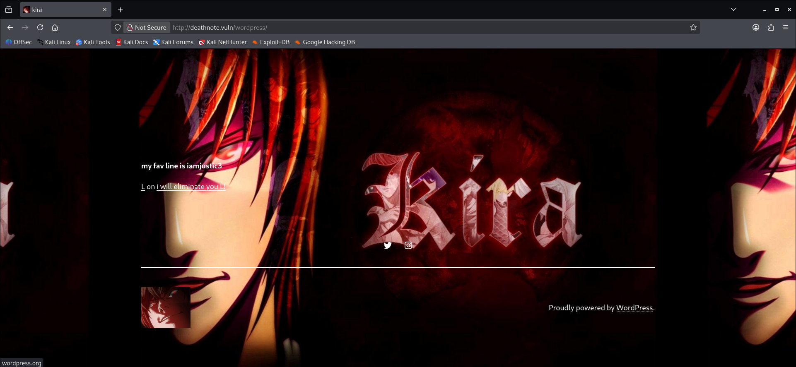
Ahora es el momento de apreciar una parte muy importante del contenido de la web: en el lateral aparece el texto my fav line is iamjustic3 y debajo otra frase atribuida a L. Esta pista resulta clave porque parece señalar una posible contraseña o palabra relevante para una autenticación posterior. En una máquina de este tipo, detalles así suelen estar escondidos en comentarios, secciones de hint o textos poco visibles, por eso conviene revisar la página completa y no quedarse solo con lo más llamativo. Esta imagen documenta justo el momento en que se localiza una credencial potencial a partir del propio contenido del sitio.
Página de pistas del WordPress
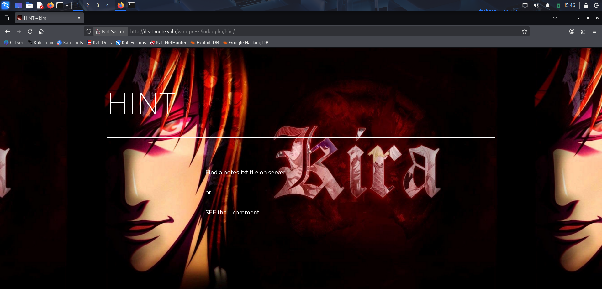
En esta página se accede a la sección de pistas de WordPress, concretamente a /wordpress/index.php/hint/. El contenido es bastante directo y orienta la enumeración hacia dos frentes: encontrar un archivo notes.txt en el servidor o revisar el comentario de L dentro del código de la web. Aunque visualmente parezca una simple página informativa, en este tipo de máquinas suele marcar el siguiente paso lógico del reconocimiento. Aquí lo importante no era lanzar ataques a lo loco, sino leer bien la pista y usarla para acotar la búsqueda. Es un buen ejemplo de cómo muchas veces la propia aplicación va guiando el proceso si se presta atención al detalle.
Revisión del HTML desde terminal
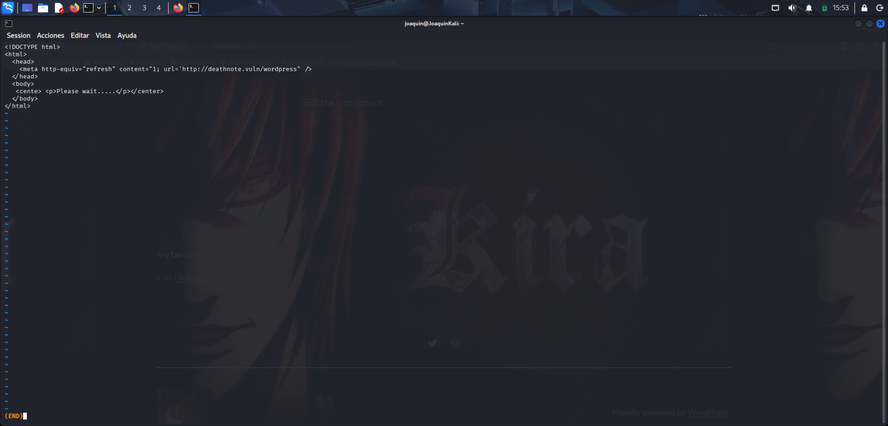
Como en otros laboratorios el código HTML ya había mostrado ciertas pistas, se opta por visualizarlo con curl y less, por eso abajo aparece (END). El comando curl descarga el contenido web en texto plano y less permite leerlo con calma desde terminal, algo muy útil para detectar redirecciones, comentarios y rutas ocultas sin depender solo del navegador. En esta ocasión no aparece nada especialmente relevante en el código.
Enumeración de directorios con Gobuster
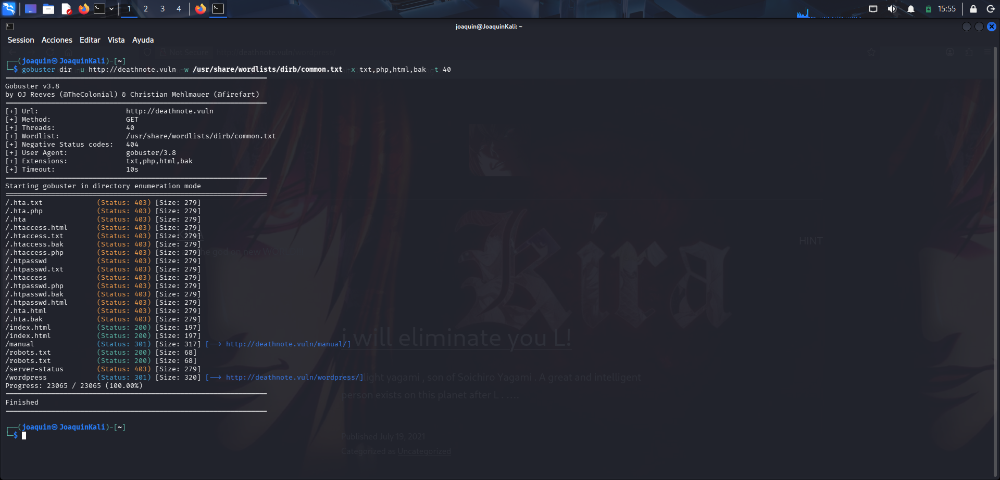
Se utiliza gobuster para hacer fuerza de reconocimiento sobre la raíz del sitio, buscando directorios y ficheros accesibles. El comando incluye -u para indicar la URL objetivo, -w para usar un diccionario de rutas comunes, -x para probar extensiones como txt, php, html y bak, y -t 40 para lanzar 40 hilos en paralelo. El resultado devuelve varias rutas interesantes, pero las más útiles son /manual, /robots.txt y /wordpress. Gracias a esta enumeración, ya no se trabaja a ciegas, sino con ubicaciones concretas que pueden contener nuevas pistas o contenido sensible.
Consulta de robots.txt
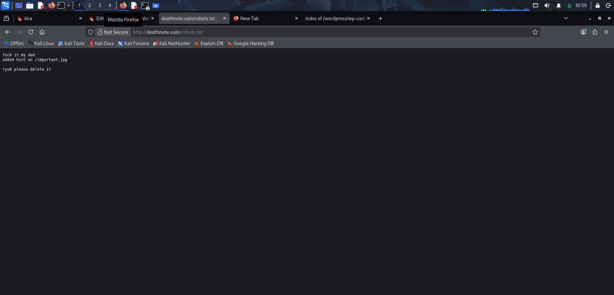
Después de localizar /robots.txt, se consulta su contenido con curl -s http://deathnote.vuln/robots.txt. La opción -s hace que la salida sea silenciosa y muestre solo el contenido útil, sin barras de progreso ni ruido extra. El archivo incluye un mensaje informal, pero lo importante es que revela una pista clave: added hint on /important.jpg. Este tipo de archivo, que normalmente se usa para orientar a los buscadores, aquí se convierte en una fuente de información para el pentesting y termina marcando el siguiente recurso que conviene revisar.
Descarga local de important.jpg
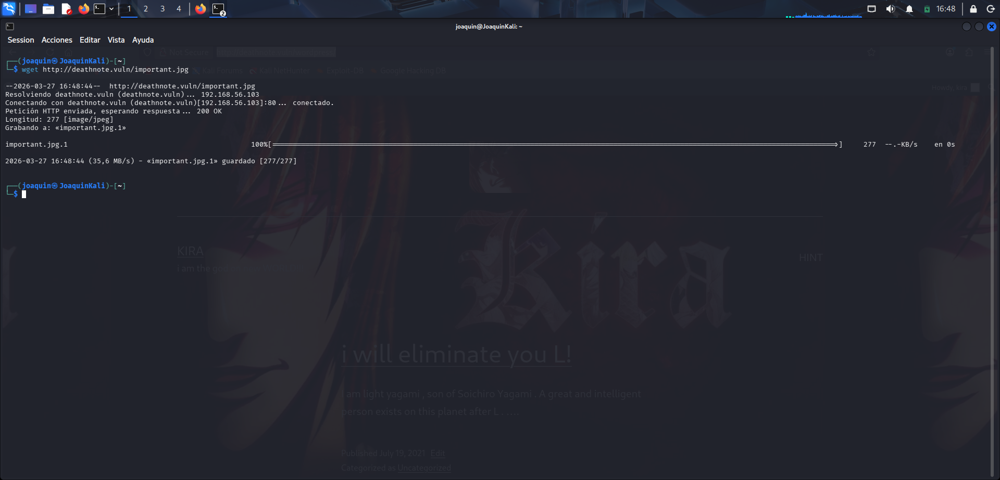
En esta fase se descarga el recurso señalado por la pista con el comando wget http://deathnote.vuln/important.jpg. wget se usa para guardar en local un archivo servido por la web, y aquí confirma que la descarga se completa correctamente con un tamaño muy pequeño, solo 277 bytes. Ese detalle ya hace sospechar, porque para ser una imagen el fichero pesa demasiado poco. La idea en este punto era comprobar si realmente se trataba de una imagen válida o si era un archivo trampa camuflado con extensión jpg. Esta comprobación sirve para no quedarse solo con lo que dice la extensión del archivo.
Fallo al abrir el supuesto JPG
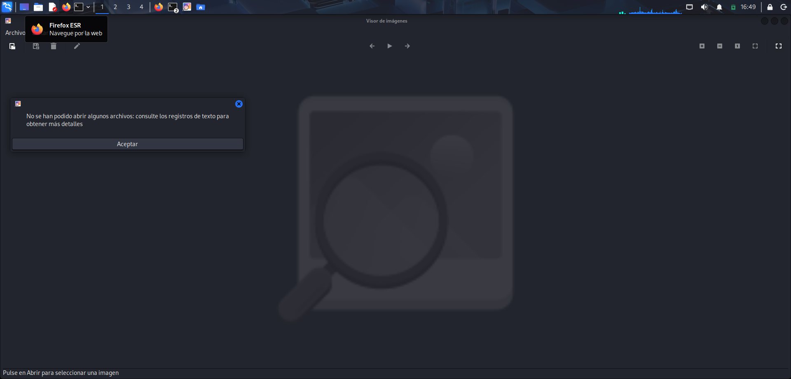
En esta parte se intenta abrir important.jpg con el visor gráfico de imágenes, pero el sistema devuelve un error indicando que no puede procesar algunos archivos. Ese fallo resulta bastante revelador, porque sugiere que el recurso no es una imagen real o que está malformado a propósito. En un laboratorio de este tipo, cuando algo no abre donde debería, normalmente merece la pena revisarlo desde terminal en lugar de descartarlo. Esta captura refleja justo ese momento en el que el comportamiento extraño del archivo obliga a cambiar de enfoque.
Identificación real del archivo
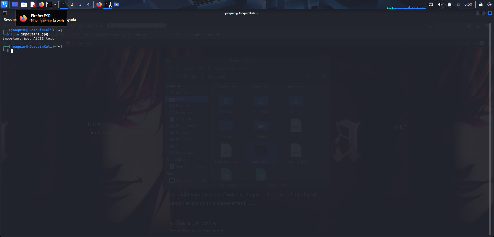
Para comprobar la naturaleza real del fichero se usa el comando file important.jpg. file inspecciona el contenido interno del archivo en vez de fiarse de la extensión, y devuelve que important.jpg es en realidad ASCII text. Ese resultado confirma que el supuesto JPG es un texto plano disfrazado, una técnica bastante típica para esconder pistas sencillas durante la enumeración. A partir de aquí ya no tenía sentido seguir tratándolo como imagen, sino abrirlo como texto para recuperar la información oculta.
Mensaje oculto dentro del falso JPG
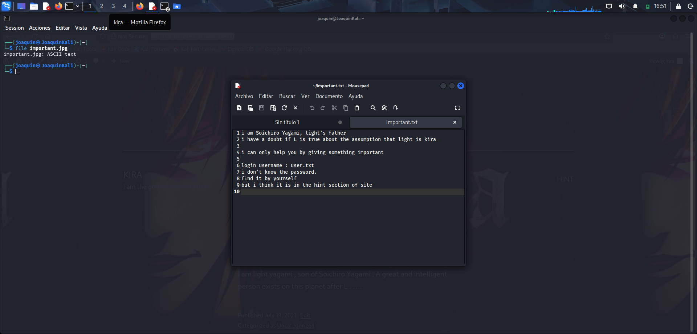
En esta imagen se abre el contenido del archivo disfrazado y aparece el mensaje oculto. El texto indica que la información relacionada con el nombre de usuario para el login se encuentra en user.txt, mientras que la contraseña no aparece ahí y debe buscarse en la sección de pistas del sitio. Esta pista resulta especialmente útil porque conecta directamente dos elementos ya localizados durante la enumeración: por un lado user.txt, como fuente de posibles usuarios, y por otro la sección hint de WordPress, como referencia para encontrar la contraseña. A partir de este momento, la búsqueda de credenciales deja de ser genérica y pasa a estar guiada por indicaciones concretas proporcionadas por la propia máquina.
Enumeración técnica con WPScan
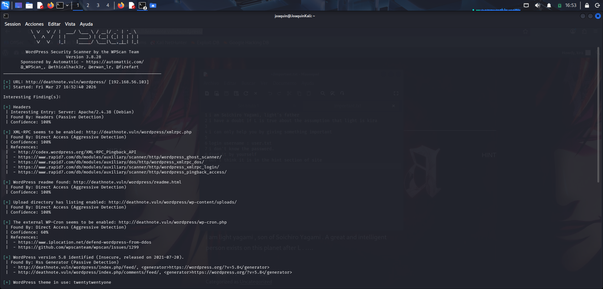
Se lanza wpscan contra la instalación de WordPress para recopilar información técnica sobre la aplicación. El escáner detecta detalles útiles como la versión de WordPress, la presencia de xmlrpc.php, el archivo readme.html, el directorio uploads y el tema activo. Aunque esta salida no muestra una vulnerabilidad explotable directa, sí ayuda a perfilar la superficie de ataque y a descartar caminos. El camino más interesante, tras explorar otros, es el de uploads.
Listado accesible del directorio uploads
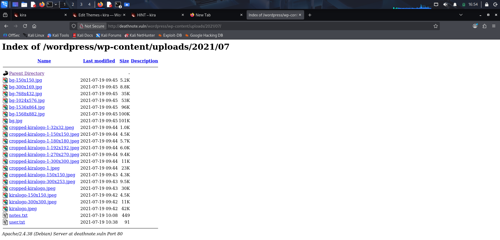
Tras probar en otros puntos del sitio, se accede al listado del directorio /wordpress/wp-content/uploads/2021/07, algo que ya había adelantado wpscan al indicar que el directorio de subidas tenía el indexado habilitado. Esto resulta interesante porque permite navegar por los ficheros cargados en WordPress sin necesidad de autenticarse. Entre las imágenes del sitio aparecen dos archivos especialmente llamativos: notes.txt y user.txt, que no encajan con el resto del contenido gráfico y de los que además ya se habían visto pistas anteriormente. Además, cuando en un directorio público aparecen ficheros de texto en mitad de recursos multimedia, casi siempre merece la pena revisarlos porque suelen contener pistas o credenciales.
Contenido expuesto de user.txt
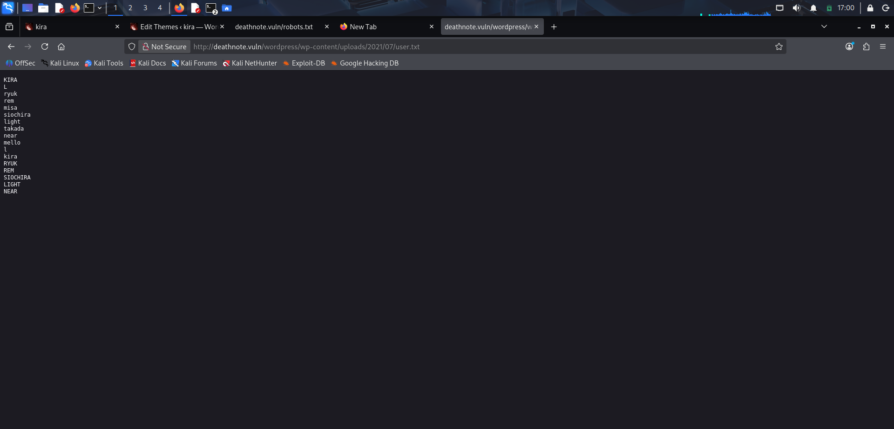
En esta captura se accede al archivo user.txt dentro del directorio de subidas y se visualiza su contenido en texto plano desde el navegador. El fichero muestra una lista de nombres relacionados con el universo de Death Note, mezclando variantes en mayúsculas y minúsculas, lo que sugiere una posible lista de usuarios, candidatos o palabras relevantes para autenticación. Aunque por sí solo no da acceso directo, este tipo de archivo acota mucho la búsqueda y proporciona contexto útil para probar credenciales o interpretar pistas posteriores. En una memoria queda bien reflejarlo porque documenta cómo se localizaron posibles usuarios sin necesidad de atacar el formulario a ciegas.
Lista de contraseñas candidatas
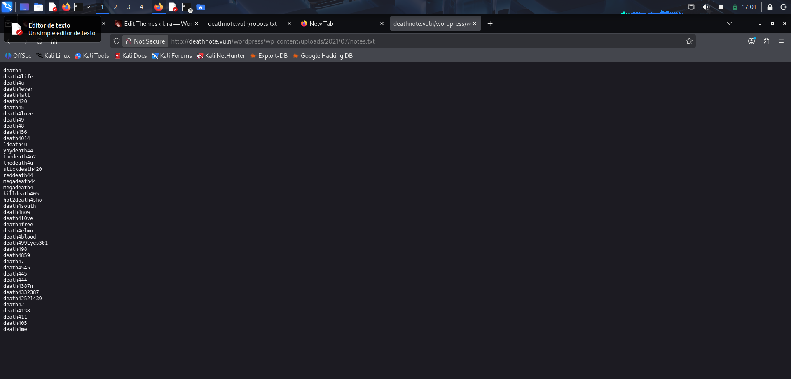
Se accede al archivo notes.txt dentro del directorio de subidas y se visualiza su contenido en texto plano desde el navegador. A diferencia de user.txt, aquí no aparecen nombres, sino una lista de cadenas que tienen pinta de posibles contraseñas o variantes relacionadas con la temática de la máquina. Este hallazgo resulta útil porque complementa la lista de usuarios encontrada antes y permite construir un juego básico de credenciales candidatas. En este punto ya no se trabaja solo con intuiciones, sino con dos ficheros concretos expuestos públicamente por la aplicación.
Descarga local de user.txt y notes.txt
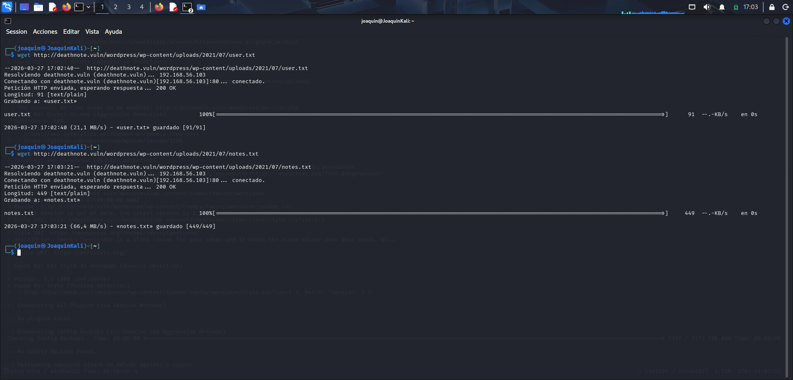
Después de identificar los archivos interesantes en el directorio uploads, se descargan localmente con wget para poder analizarlos con más comodidad desde terminal. En la captura se guardan tanto user.txt como notes.txt, que pasan a estar disponibles en la máquina atacante como ficheros de texto plano. Este paso no descubre nada nuevo por sí mismo, pero sí facilita trabajar con ambas listas sin depender del navegador. Además, deja preparado el material para combinaciones posteriores entre posibles usuarios y contraseñas.
Fuerza bruta controlada con Hydra
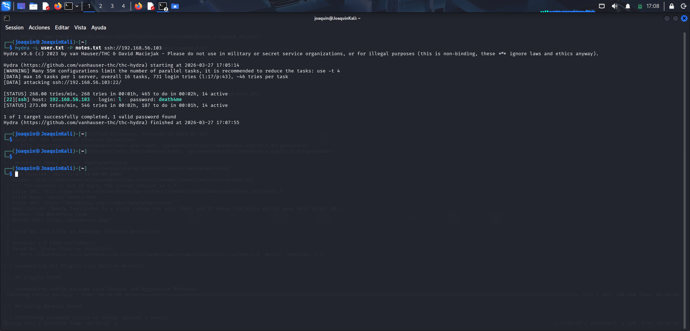
En esta fase se utiliza la herramienta hydra para automatizar la comprobación de combinaciones de usuario y contraseña contra el servicio SSH del objetivo. El comando toma como entrada user.txt y notes.txt y prueba las credenciales contra el puerto 22 de la máquina vulnerable. La salida termina mostrando una coincidencia válida, asociando el usuario l con la contraseña death4me. Este resultado confirma que la enumeración previa era correcta y permite pasar de la fase de reconocimiento a la de acceso inicial.
Primer inicio de sesión por SSH
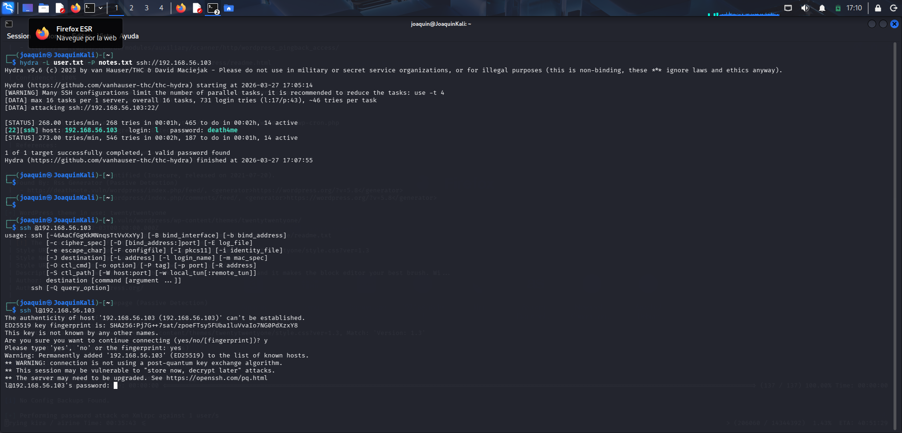
Una vez localizadas las credenciales válidas, se intenta el acceso remoto con ssh. Primero aparece un intento mal formado, pero después se corrige el formato incluyendo el usuario delante de la IP, y se acepta la huella digital del host para continuar. A continuación, se introduce la contraseña descubierta y se establece la conexión con la máquina objetivo.
Acceso inicial y lectura de la primera flag
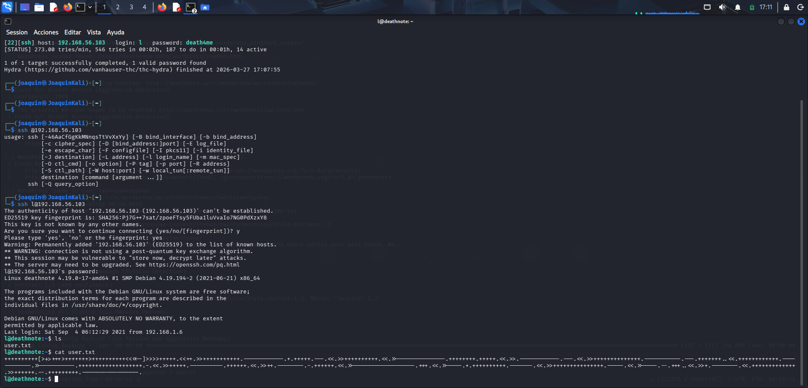
Se completa el acceso inicial a la máquina por ssh utilizando las credenciales obtenidas previamente. Primero se acepta la huella digital del host y después se introduce la contraseña válida, estableciendo una sesión interactiva en el sistema. Una vez dentro, se listan los ficheros del directorio personal con ls y se consulta user.txt con cat, obteniendo la primera prueba de acceso. El contenido de esta flag no solo confirma que la intrusión ha funcionado, sino que además deja una nueva pista cifrada que habrá que interpretar para poder seguir avanzando dentro del laboratorio.
Decodificación de la pista en Brainfuck
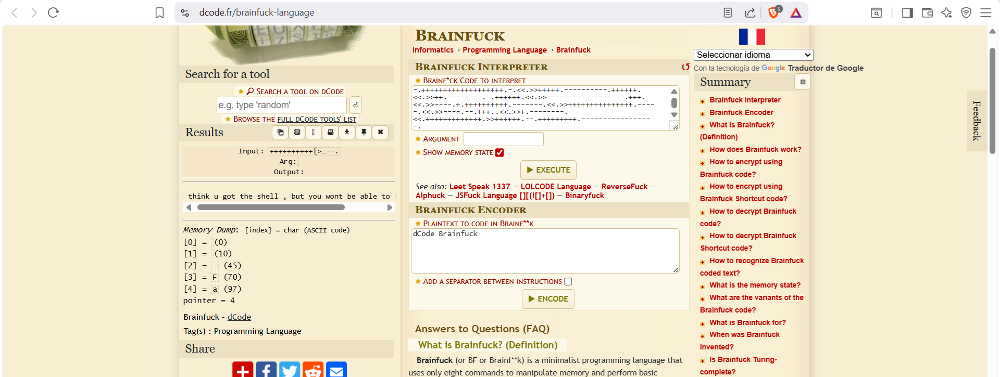
Se analiza la pista obtenida en la flag anterior utilizando una herramienta online de Brainfuck. Tras introducir la cadena en el intérprete, el resultado muestra el mensaje think u got the shell, but you wont be able to…, indicando que, aunque ya se ha conseguido acceso al sistema, todavía quedan restricciones o pasos adicionales para avanzar. Esta fase encaja como parte de la enumeración local posterior, ya que obliga a interpretar correctamente la pista antes de continuar con la escalada o el movimiento lateral.
Enumeración local y archivo no legible de kira
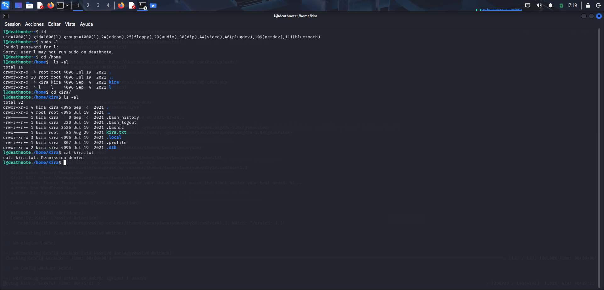
Se continúa con la enumeración local una vez conseguido el acceso al sistema como l. Primero se usa id para comprobar a qué grupos pertenece el usuario actual y sudo -l para verificar si dispone de permisos elevados, descartando una vía directa mediante sudo. Después se revisa el contenido de /home y del directorio personal de kira con ls -al. Allí se localiza el archivo kira.txt, pero al intentar leerlo con cat se obtiene un Permission denied. Este paso permite identificar que, aunque no todos los ficheros de kira son accesibles, sí merece la pena seguir revisando su directorio en busca de otros recursos útiles.
Revisión de la carpeta .ssh de kira
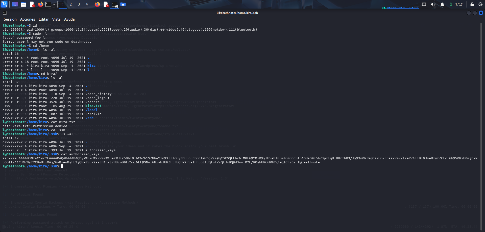
Se prosigue la revisión del directorio personal de kira y se accede a su carpeta .ssh, que sí es accesible con el usuario actual. Una vez dentro, se listan sus archivos con ls -al y se muestra el contenido de authorized_keys con cat. La salida revela una clave pública SSH autorizada, confirmando que el acceso mediante claves está habilitado para ese usuario. Este hallazgo es importante porque abre la posibilidad de reutilizar una clave privada localizada en otra cuenta del sistema.
Enumeración del SSH del usuario l
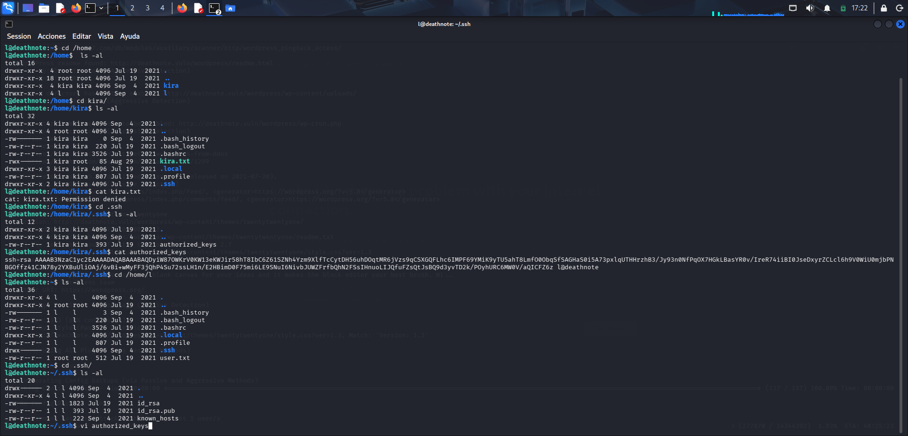
Ahora se vuelve al directorio personal del usuario l para comparar sus recursos con los observados en la cuenta de kira. Primero se revisa su directorio con ls -al, donde aparecen user.txt y también un directorio .ssh. Después se entra en .ssh, se listan sus ficheros con ls -al y se comprueba que contiene elementos como id_rsa, id_rsa.pub, known_hosts y authorized_keys. La presencia de id_rsa resulta especialmente relevante, ya que puede corresponderse con la autenticación por claves observada anteriormente en la cuenta de kira.
Comparación de authorized_keys
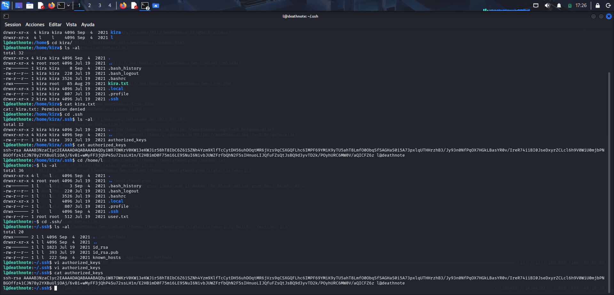
Se muestra directamente el contenido de authorized_keys del usuario l mediante cat, después de un intento previo de abrirlo con vi. Al comparar esta clave pública con la observada en authorized_keys de kira, se comprueba que ambas coinciden. Esto sugiere que la clave privada id_rsa almacenada en la cuenta de l puede reutilizarse para autenticarse como kira, dejando preparada una vía bastante clara de movimiento lateral mediante SSH.
Movimiento lateral al usuario kira
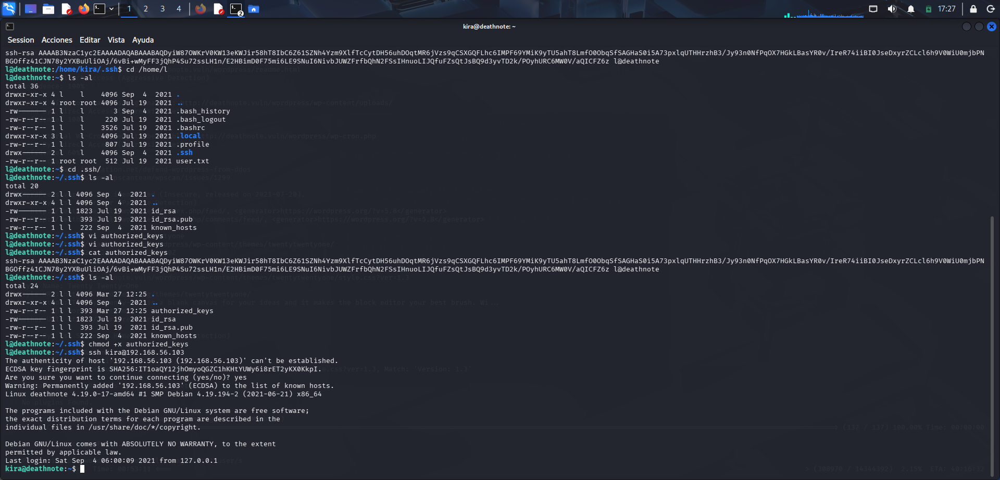
En esta captura se aprovecha la confianza configurada mediante SSH para autenticarse como el usuario kira. Primero se ajustan los permisos de la clave privada con chmod, ya que SSH exige permisos restrictivos para utilizarla, y después se inicia una nueva conexión usando dicha clave para acceder como kira. Tras aceptar la huella digital del host, la sesión se abre correctamente y el prompt cambia a kira@deathnote, confirmando que el movimiento lateral ha funcionado. Este paso demuestra que la mala gestión de permisos y la reutilización de claves SSH permiten pivotar entre usuarios sin necesidad de conocer una nueva contraseña.
Lectura de kira.txt y nueva pista
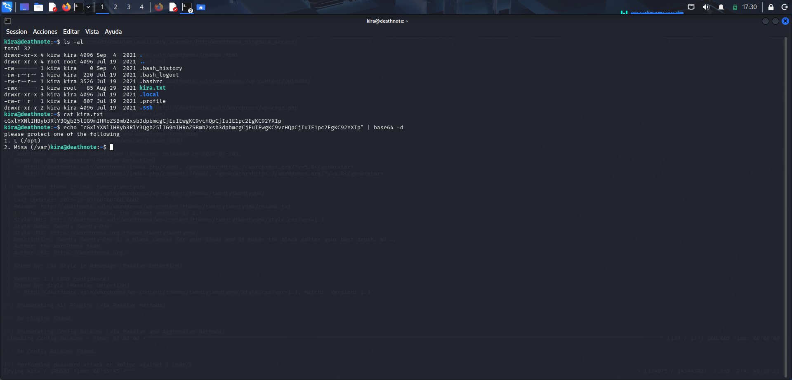
Se sigue la enumeración local ya como kira dentro de su directorio personal. Se listan los ficheros con ls -al y se localiza kira.txt, cuyo contenido se muestra con cat. Después se decodifica la cadena obtenida con echo … | base64 -d, revelando una nueva pista: se pide proteger a una de dos personas, L o Misa.
Hallazgo de un directorio sospechoso en /opt
En esta parte se sigue la pista obtenida tras decodificar kira.txt y se empieza a revisar el sistema en busca de algo relacionado con las nuevas referencias. Se accede a /opt con cd /opt, se listan sus contenidos con ls y ls -al, y aparece un directorio llamativo llamado fake-notebook-rule, junto a otro llamado kira-case. Después se entra en fake-notebook-rule, donde ya se observan dos archivos interesantes: case.wav y hint. Este paso marca el hallazgo del siguiente punto clave de la postexplotación.
Análisis del falso archivo de audio
A continuación se analiza el archivo case.wav para comprobar su naturaleza real. Primero se usa file case.wav, que lo identifica como texto ASCII, y después se visualiza su contenido con cat. El resultado deja una pista bastante reveladora: cyberchef.
Cadena hexadecimal oculta en case.wav
Para descubrir qué hay detrás de case.wav se muestra su contenido con cat case.wav, observándose una cadena en hexadecimal. Este resultado confirma que el archivo estaba disfrazado y que, en realidad, oculta información codificada en varias capas.
Primera transformación en CyberChef
Tal y como indicaba la pista, se lleva la cadena hexadecimal a CyberChef y se aplica la operación From Hex. El resultado obtenido ya no es hexadecimal, sino una nueva cadena con formato de Base64.
Decodificación completa de la credencial
Se prosigue el proceso de decodificación en CyberChef aplicando nuevas conversiones sobre la cadena anterior. Tras completar la secuencia adecuada, el resultado final muestra el texto passwd : kiraisevil. Este hallazgo proporciona una credencial nueva y útil, vinculada al usuario comprometido, y deja preparado el siguiente paso para comprobar si puede aprovecharse con privilegios elevados.
Comprobación de privilegios sudo
En este momento se comprueban los privilegios del usuario kira con sudo -l, utilizando la contraseña recién obtenida. La salida indica que kira puede ejecutar (ALL : ALL) ALL, es decir, cualquier comando como cualquier usuario, lo que supone una vía directa de escalada a root. Este punto es decisivo porque convierte una simple contraseña en control administrativo total sobre la máquina.
Escalada final y lectura de root.txt
En esta última captura se intenta primero acceder a /root sin privilegios con cd /root, obteniendo un Permission denied, y a continuación se emplea sudo su para abrir una shell como root. Ya con privilegios máximos, se accede al directorio de root, se listan sus contenidos con ls y se muestra root.txt con cat. La lectura de esta flag confirma la escalada completa y cierra el laboratorio con compromiso total del sistema.
Conclusión
Este laboratorio muestra bastante bien cómo una intrusión no siempre depende de una vulnerabilidad compleja, sino muchas veces de una cadena de pequeños fallos de configuración y pistas mal protegidas. A lo largo de la máquina se ve cómo una buena enumeración, tanto web como local, permite ir enlazando información aparentemente suelta hasta convertirla en acceso real al sistema. Primero se obtienen credenciales a partir de archivos expuestos y pistas en la aplicación, después se aprovechan permisos débiles y una mala gestión de claves SSH para moverse lateralmente entre usuarios, y finalmente se llega a root gracias a una contraseña oculta y a unos privilegios sudo excesivos. En conjunto, la máquina refuerza una idea muy importante en ciberseguridad: muchas veces no gana quien “ataca más”, sino quien enumera mejor y sabe interpretar cada detalle.
Matrix
Resolución completa del laboratorio Matrix, desde la enumeración inicial hasta la obtención de acceso root y la lectura de la flag final.
| Ficha Técnica | Detalles |
|---|---|
| Dificultad | Fácil / Media |
| SO Objetivo | Linux (Porteus) |
| Puertos Críticos | 80, 31337 (HTTP), 22 (SSH) |
| Técnicas Clave | Escape de rbash (vi), Decodificación Brainfuck, Fuerza Bruta, Reconocimiento de Puertos. |
En este laboratorio se plantea una resolución muy guiada por la observación y por la interpretación de pistas ocultas. Al principio se descubrirán servicios, se revisará el contenido de varias páginas y se analizarán cadenas codificadas hasta llegar a unas credenciales válidas para entrar por SSH. Una vez dentro, el reto cambia de enfoque y obliga a entender cómo funciona una shell restringida y cómo salir de ella usando herramientas ya disponibles en el sistema. Es una práctica muy interesante porque mezcla reconocimiento web, lógica, decodificación y escalada de privilegios en un recorrido bastante completo.
Escaneo de red y descubrimiento del objetivo
Se ejecuta ip a, comando que permite ver las interfaces de red y las direcciones IP asignadas, identificando que la máquina se encuentra en la red 192.168.56.0/24. Después se utiliza arp-scan -l, herramienta que escanea la red local para descubrir dispositivos activos, encontrando la IP 192.168.56.106 como objetivo. A continuación se lanza nmap -sC -sV 192.168.56.106, donde -sC ejecuta scripts por defecto y -sV detecta versiones de servicios, identificando puertos abiertos como 22 (SSH) y 80/31337 (HTTP), lo que indica posibles puntos de entrada.
Página principal con temática de Matrix
Se accede mediante navegador a http://192.168.56.106, mostrando una página con temática de Matrix y el mensaje Follow the White Rabbit, lo que sugiere que se trata de un entorno tipo CTF donde pueden existir pistas ocultas dentro del sitio web o su código fuente.
Análisis del código fuente de la web
Se utilizan las herramientas de desarrollador del navegador (Inspector) para analizar el HTML y los recursos cargados, revisando scripts y estructura interna con el objetivo de encontrar información oculta o comentarios que no son visibles en la interfaz, técnica habitual en la fase de enumeración web.
Acceso al servicio del puerto 31337
Se observa el acceso a http://192.168.56.106:31337, uno de los puertos previamente detectados con Nmap. La página muestra el nombre Cypher y una cita de Matrix, lo que confirma que este servicio contiene contenido distinto al de la web principal y puede incluir nuevas pistas para continuar con la enumeración.
Identificación de una cadena codificada
En esta fase se inspecciona el código fuente de la página del puerto 31337 y se localiza una cadena aparentemente codificada dentro del HTML. Este paso resulta clave, ya que al no mostrarse información útil de forma visible, la revisión manual del código permite descubrir datos ocultos que pueden actuar como pista o credencial para las siguientes fases del reto.
Guardado de la cadena en un archivo
Ahora se traslada la cadena descubierta a la terminal usando echo, comando que imprime por pantalla el texto indicado y que en este caso también se redirige con > a un archivo llamado Cypher.matrix. La redirección permite guardar el contenido en un fichero para trabajarlo con más comodidad después, mientras que ls se utiliza para listar los archivos del directorio y comprobar que el fichero se ha creado correctamente.
Visualización del contenido del archivo
Se accede al archivo Cypher.matrix desde el navegador y se observa un bloque de caracteres formado únicamente por símbolos como +, -, <, > y corchetes. Ese patrón es característico del lenguaje Brainfuck, por lo que el contenido deja de interpretarse como texto aleatorio y pasa a considerarse código que debe ser decodificado o interpretado.
Interpretación del código Brainfuck
Se utiliza un intérprete online de Brainfuck para analizar el contenido extraído anteriormente. Al ejecutar el código, el resultado muestra un mensaje que revela una credencial parcial, indicando que el acceso debe realizarse con el usuario guest y una contraseña incompleta, donde faltan los dos últimos caracteres. Esta salida aporta una pista directa para la fase de acceso inicial a la máquina.
Generación de diccionario y ataque con Hydra
Se ejecuta crunch 8 8 -t kll1l0r@@ -o dict.txt, donde crunch genera listas de palabras a medida y -t define una plantilla con caracteres fijos y posiciones variables, creando así un diccionario con las dos posiciones desconocidas de la contraseña. Después se comprueba su creación con ls. Finalmente se ejecuta hydra -l guest -P dict.txt 192.168.56.106 ssh, donde hydra prueba credenciales automáticamente, -l indica el usuario, -P el diccionario de contraseñas y ssh el servicio atacado. El resultado permite recuperar la contraseña válida del usuario guest.
Inicio de sesión remoto por SSH
Se establece conexión con ssh guest@192.168.56.106, comando que inicia una sesión remota segura contra la máquina objetivo usando el usuario guest. Durante la primera conexión aparece el aviso de autenticidad de la clave del host, algo normal cuando el servidor aún no está en known_hosts, y tras aceptar la huella se introduce la contraseña obtenida anteriormente. El acceso se completa con éxito y se obtiene una shell interactiva en el sistema remoto.
Detección de una shell restringida
Una vez dentro del sistema, se comprueba el comportamiento del entorno ejecutando ls y pwd. El comando pwd, que muestra el directorio actual, devuelve /home/guest, pero ls falla porque la shell está restringida y no permite usar rutas explícitas o binarios fuera del entorno controlado. Además, al consultar PATH se observa que apunta a /home/guest/prog, lo que confirma que solo se pueden ejecutar programas concretos desde ese directorio. Esto permite identificar que se está trabajando dentro de una rbash o shell restringida.
Apertura de vi en el entorno restringido
En este paso se observa la apertura de vi, editor disponible dentro del entorno restringido, mostrándose el mensaje No file 1/1 100%, que indica que se ha abierto sin cargar ningún archivo. La presencia de vi resulta interesante porque, en entornos restringidos, este tipo de binarios puede utilizarse para escapar de la shell limitada o para intentar modificar el entorno. En esta fase, vi se convierte en una herramienta potencial para continuar la escalada o la evasión de restricciones.
Prueba fallida dentro de vi
Se introduce !/bin/bash dentro del editor, pero en lugar de ejecutarse como orden, el texto queda escrito en el buffer y aparece el estado No file [Modified]. Esto indica que el editor se encontraba en modo inserción o que la orden no estaba siendo interpretada como comando interno de vi, sino como contenido normal del documento. Este comportamiento permite confirmar que aún no se había conseguido ejecutar una shell desde el editor y que era necesario salir sin guardar o volver a intentar la interacción en modo comando.
Salida del editor sin guardar
Se inserta :q! dentro de vi, orden utilizada para salir del editor sin guardar el contenido escrito en el buffer. Esta acción resulta útil porque las pruebas anteriores habían modificado el documento vacío y no aportaban valor al proceso de explotación. De este modo, se reinicia el editor y se evita dejar contenido innecesario, manteniendo el entorno limpio antes de volver a probar una posible vía de escape desde vi.
Invocación de bash desde vi
Se introduce :!/bin/bash dentro del editor, sintaxis que en vi se utiliza para intentar ejecutar un comando del sistema desde el propio editor. En este caso, el objetivo es lanzar una shell Bash para escapar del entorno restringido. Esta técnica es habitual en escenarios con rbash, ya que algunos programas permitidos pueden servir como puente hacia una shell más funcional.
Restauración del entorno y acceso root
En este punto ya se observa una shell funcional, desde la cual se ejecutan export SHELL=/bin/bash y export PATH=/usr/bin:/bin:$PATH. El primer comando define Bash como shell por defecto y el segundo amplía la variable de entorno PATH para que el sistema pueda localizar binarios estándar como sudo o su. Después se lanza sudo su, que permite cambiar al usuario root usando privilegios elevados. El cambio de prompt a root@porteus confirma que la escalada de privilegios se ha completado con éxito.
Lectura de la flag final
En esta última captura, ya con privilegios de administrador, se ejecuta ls para listar el contenido accesible y confirmar la presencia de flag.txt, después cd /root para situarse en el directorio del superusuario y finalmente cat flag.txt para mostrar el contenido de la flag. El comando cat se utiliza para imprimir por pantalla el contenido de un archivo de texto. Con ello se completa el objetivo del reto, demostrando acceso total al sistema y recuperación de la flag final.
Conclusión
En conclusión, este laboratorio muestra de forma muy clara cómo una cadena de fallos aparentemente simples puede llevar a un compromiso total del sistema. A partir de una enumeración básica de red, se identifican servicios expuestos, se analiza el contenido web en busca de pistas y se aprovechan credenciales débiles para obtener acceso inicial. A partir de ahí, el uso de herramientas conocidas y técnicas clásicas, como la evasión de una shell restringida y la manipulación de variables de entorno, permite escalar privilegios hasta root. En definitiva, se trata de un ejemplo muy didáctico de cómo la metodología, la observación y el conocimiento de herramientas básicas pueden marcar la diferencia en un proceso de explotación.
Dobby
Resolución completa del laboratorio Dobby, desde la configuración del entorno hasta la obtención de privilegios de administrador.
| Ficha Técnica | Detalles |
|---|---|
| Dificultad | Fácil / Media |
| SO Objetivo | Linux (Ubuntu) |
| Servicios Web | Apache (Puerto 80), WordPress (/DiagonAlley) |
| Técnicas Clave | Enumeración Web (Gobuster/WPScan), Decodificación Base64, Explotación de WordPress, Escalada SUID (Find). |
En este laboratorio se trabaja tanto la parte web como la parte interna del sistema, viendo cómo pequeñas pistas pueden acabar llevando a un compromiso completo. Primero se hará reconocimiento de red y enumeración web para localizar rutas ocultas, mensajes codificados y credenciales reutilizables. Después se aprovechará el acceso conseguido en WordPress para avanzar hacia la máquina y obtener una shell funcional. A partir de ahí, la práctica continúa con enumeración local y una escalada de privilegios sencilla, pero muy útil para aprender a detectar configuraciones inseguras.
Configuración de red en VirtualBox
Para este laboratorio, aunque ya existía una red interna específica para prácticas, se optó por utilizar la opción Adaptador sólo anfitrión en VirtualBox. Esta configuración también permite la comunicación entre la máquina atacante y la máquina vulnerable dentro de un entorno controlado, por lo que resultaba válida para realizar la práctica sin necesidad de modificar la red ya disponible. De este modo, se trabaja con una conexión funcional y aislada, manteniendo la comodidad de una configuración que ya se había usado en otros laboratorios.
Enumeración inicial de red
En esta fase se identifica la configuración de red de la máquina atacante y se comprueba la conectividad dentro del laboratorio. Con el comando ip a se visualizan las interfaces y se confirma que Kali tiene asignada la dirección 192.168.56.102 en la red host-only. Después, con sudo arp-scan -l se realiza un descubrimiento de hosts en la subred local, detectando varias direcciones activas. Por último, con nmap -sC -sV se analizan los hosts encontrados para identificar servicios y versiones. El resultado permite distinguir que la máquina objetivo es 192.168.56.101, ya que expone un servicio HTTP sobre Apache en el puerto 80.
Decodificación de una pista en Base64
Es el momento de analizar una pista obtenida durante la enumeración web. Mediante el comando echo 'dG9vIGVhc3kgbm8/IFBvdHRlcg==' | base64 -d se decodifica una cadena en Base64 incluida en el título HTTP detectado previamente. El resultado es el texto too easy no? Potter, que confirma que la máquina contiene pistas temáticas relacionadas con el laboratorio. Este tipo de comprobación resulta útil para transformar información aparentemente opaca en indicios aprovechables para las siguientes fases.
Descubrimiento de rutas ocultas con Gobuster
Aquí se realiza enumeración de contenido web con el comando gobuster dir -u http://192.168.56.101 -w /usr/share/wordlists/dirb/common.txt -x php,txt,html. Esta herramienta fuerza rutas y ficheros comunes para descubrir recursos no visibles desde la página principal. Como resultado se identifican, entre otras, las rutas /log y phpinfo.php, ambas accesibles con código de estado 200. El hallazgo de /log resulta especialmente relevante, ya que apunta a la existencia de información sensible expuesta en el servidor web.
Obtención de una posible contraseña
Se completa el análisis de la información expuesta en la ruta /log. Mediante el comando echo 'OjppbGlrZXNvY2tz' | base64 -d se decodifica la cadena obtenida previamente, revelando el valor ::ilikesocks. De este resultado se extrae como dato útil la posible contraseña ilikesocks, que se interpreta como una credencial reutilizable dentro del laboratorio. Este paso demuestra cómo una mala gestión de información sensible en recursos web accesibles puede derivar en la exposición de credenciales válidas o de pistas clave para continuar con la intrusión.
Acceso al WordPress oculto en DiagonAlley
En esta fase se accede a la ruta /DiagonAlley, identificada previamente como recurso de interés. La página corresponde a un sitio WordPress con apariencia de blog, denominado Daily Prophet, y muestra varias entradas publicadas por el usuario Draco. La visualización del portal confirma que la aplicación web no era un simple recurso oculto, sino una instancia funcional de WordPress que puede ser objeto de enumeración y ataque. Además, la entrada titulada DOBBY contiene un texto anómalo que sugiere la presencia de mensajes codificados o pistas adicionales dentro del contenido del sitio.
Revisión manual de la entrada DOBBY
Se profundiza en el contenido de la entrada DOBBY del blog WordPress. La URL mostrada confirma que se trata de una entrada individual dentro de la aplicación, y en la parte inferior se observa el formulario de comentarios del sistema. Este acceso permite verificar la estructura de las publicaciones, la plantilla empleada y la posible interacción con componentes propios de WordPress. La revisión manual de entradas concretas resulta útil para localizar pistas, cadenas codificadas, nombres de usuario o patrones temáticos que puedan ayudar en la obtención posterior de credenciales.
Validación del usuario draco en el login
Se muestra el acceso al panel de autenticación de WordPress mediante la ruta wp-login.php. Se observa un intento fallido de inicio de sesión con el usuario draco, y el mensaje de error indica que el nombre de usuario es válido pero que la contraseña introducida no es correcta. Este comportamiento es relevante desde el punto de vista de seguridad, ya que permite confirmar la existencia del usuario sin necesidad de autenticarse. La enumeración de usuarios a través de mensajes de error del formulario de login constituye una debilidad común en aplicaciones mal configuradas.
Credenciales válidas encontradas con WPScan
Se utiliza la herramienta wpscan para realizar enumeración específica sobre la instalación WordPress y probar credenciales contra el usuario identificado. La salida de la herramienta confirma primero el tema activo del sitio, denominado amphibious, y posteriormente muestra el hallazgo de una combinación válida: usuario draco y contraseña slytherin. Este resultado permite obtener acceso autenticado al panel de administración del WordPress. La captura refleja cómo la combinación de enumeración previa y ataque de diccionario puede derivar en la obtención de credenciales válidas en entornos con contraseñas débiles.
Pista oculta en el código fuente
Se observa una vía alternativa para localizar la siguiente pista del laboratorio mediante inspección manual del código fuente de la página principal. Al abrir las herramientas del navegador se aprecia, dentro del HTML, un comentario oculto con el texto See: /alohomora. Este hallazgo demuestra que la página visible no contenía toda la información relevante y que parte de las pistas estaban embebidas en comentarios del código. La revisión del HTML constituye una técnica básica de enumeración web, especialmente útil cuando la aplicación muestra contenido por defecto o aparentemente inocuo.
Pista directa para deducir la contraseña
Se accede directamente a la ruta /alohomora descubierta en el código fuente. La página muestra el mensaje Draco's password is his house ;), que proporciona una pista lógica para deducir la contraseña del usuario draco sin necesidad de recurrir a fuerza bruta. De este modo, el laboratorio ofrece una segunda vía de resolución basada en enumeración manual e interpretación de pistas. Esta alternativa resulta especialmente interesante desde el punto de vista didáctico, ya que refleja cómo una mala práctica en el desarrollo web puede exponer información sensible mediante comentarios HTML o rutas no enlazadas.
Acceso al editor de temas de WordPress
Una vez se accede con las credenciales correctas, el siguiente paso es entrar en el editor de temas del panel de administración de WordPress. En concreto, se visualiza el archivo 404.php del tema activo Amphibious, lo que confirma que el usuario comprometido dispone de permisos suficientes para modificar archivos del tema desde la propia interfaz web. Este punto es importante porque demuestra que el compromiso del panel no solo permite administrar contenidos, sino también interactuar con elementos internos de la plantilla. La presencia del botón Actualizar archivo indica además que el fichero puede editarse directamente desde el backend.
Preparación de un fragmento PHP externo
Es el momento de preparar un código PHP generado externamente para ser utilizado dentro del laboratorio. La página mostrada corresponde a un generador de fragmentos PHP, donde se configuran una dirección IP y un puerto de escucha asociados a la máquina atacante. Desde el punto de vista metodológico, esta fase refleja la preparación previa de un recurso que posteriormente se intentaría insertar en un archivo editable del tema de WordPress. En la memoria conviene destacar este paso como parte del proceso de preparación del entorno de práctica, sin entrar en los detalles concretos del contenido generado.
Listener preparado en Kali
Una vez insertado el código, desde la terminal de Kali, y mediante el comando nc -lvnp 4444, se realiza una escucha para recibir una posible conexión entrante desde la máquina objetivo. Este paso forma parte de la preparación del entorno atacante y resulta necesario antes de intentar activar el archivo modificado desde la aplicación web.
Comprobación de acceso directo al 404.php
Para activar la escucha, se accede a la dirección http://192.168.56.101/DiagonAlley/wp-content/themes/amphibious/404.php, ya que apunta al archivo de plantilla de error 404 del tema activo. En esta fase se comprueba el comportamiento del servidor al acceder directamente a la ruta del archivo 404.php dentro del directorio del tema. La respuesta devuelta por Apache es un error Not Found, lo que indica que el archivo no puede ejecutarse simplemente accediendo a su ruta física desde el navegador.
Recepción de acceso inicial como www-data
Aquí se observa la terminal de Kali a la espera de conexiones mediante el comando nc -lvnp 4444. La consola muestra que se ha establecido una conexión entrante desde la máquina objetivo 192.168.56.101 y que el proceso remoto se ejecuta con el usuario www-data, propio del servicio web Apache. De esta forma se abre la puerta a la fase posterior de enumeración local y escalada de privilegios. También se identifica el entorno del sistema remoto, confirmando que se trata de una máquina Linux basada en Ubuntu.
Cambio al usuario dobby y mejora de la shell
En esta fase ya se ve que, después de entrar con el usuario del servicio web, se consigue pasar al usuario dobby usando la contraseña ilikesocks, que se había obtenido antes durante la enumeración. También se ejecutan los comandos python3 -c 'import pty; pty.spawn("/bin/bash")' y export TERM=xterm para que la terminal funcione de una forma más cómoda y estable. Esto permite escribir y ejecutar comandos con menos problemas, algo importante antes de seguir investigando el sistema. En resumen, aquí se consigue un acceso más limpio y útil dentro de la máquina.
Búsqueda de binarios con permisos especiales
Se lanza el comando find / -perm -4000 -type f 2>/dev/null para buscar programas del sistema que tengan permisos especiales. La idea de este paso es revisar si hay algún binario mal configurado que pueda aprovecharse para subir de privilegios. Entre los resultados aparecen varios archivos interesantes, y destacan especialmente base32 y find, que llaman la atención porque no suelen ser los más comunes en este tipo de búsquedas. Esta comprobación sirve para localizar posibles caminos hacia la cuenta de administrador.
Escalada de privilegios con find
En esta fase se prueba uno de los binarios encontrados, en concreto find, con el comando find . -exec /bin/sh -p \; -quit. Después se comprueba el resultado con whoami e id, y se confirma que ya se ha conseguido acceso como root. Así, se ha pasado de un usuario normal a tener control total sobre la máquina. Se trata del momento clave de la escalada de privilegios dentro del laboratorio.
Lectura de la prueba final del laboratorio
Una vez conseguido el acceso como root, se entra en el directorio del administrador con cd /root y se revisa su contenido usando ls -lah. Allí aparece el archivo proof.txt, que actúa como prueba final de que la máquina ha sido comprometida completamente. Aunque el comando cat da problemas en esa terminal, el contenido se consigue leer con more proof.txt, mostrando el mensaje final del laboratorio. Con esto se confirma que el ejercicio ha sido resuelto correctamente de principio a fin.